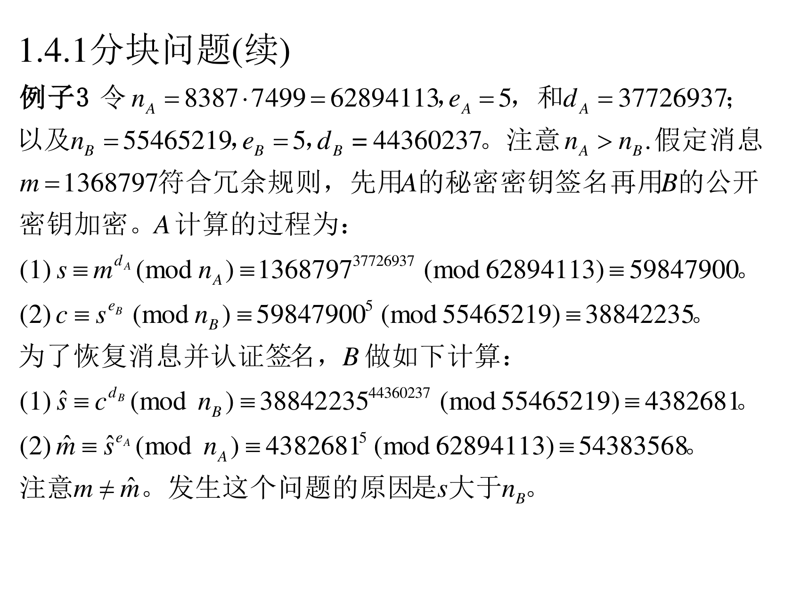
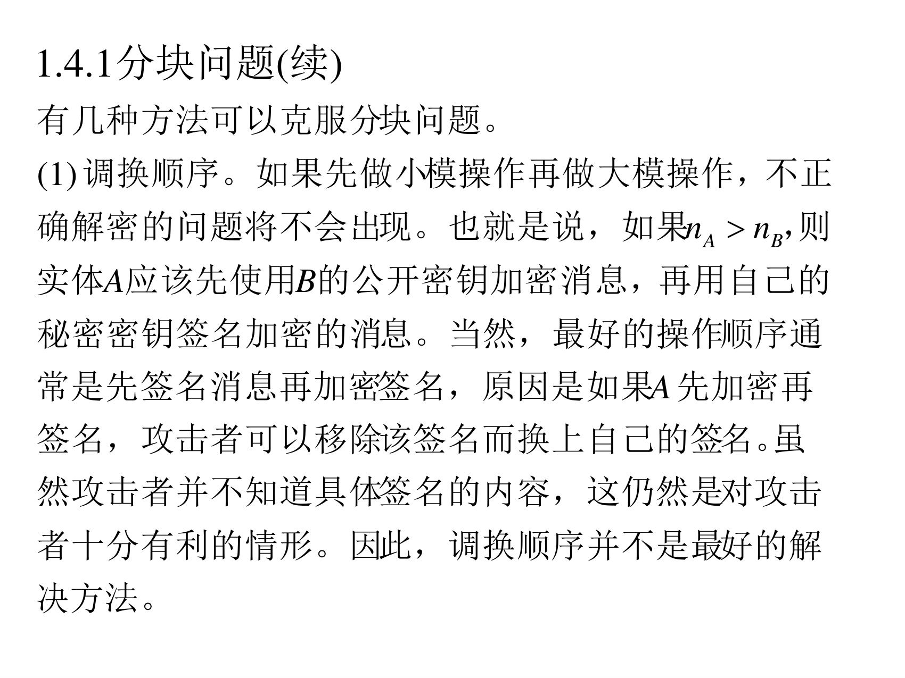
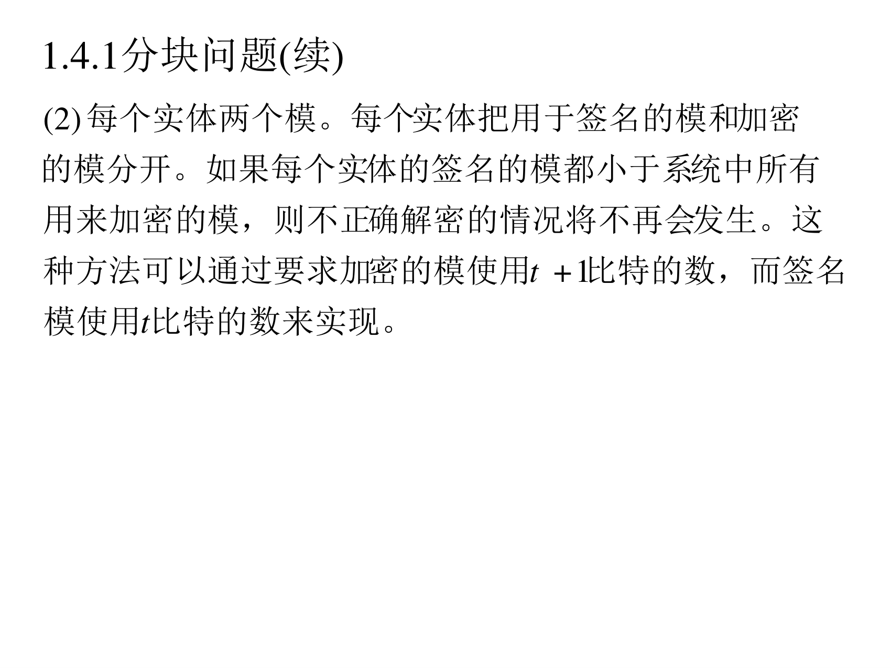
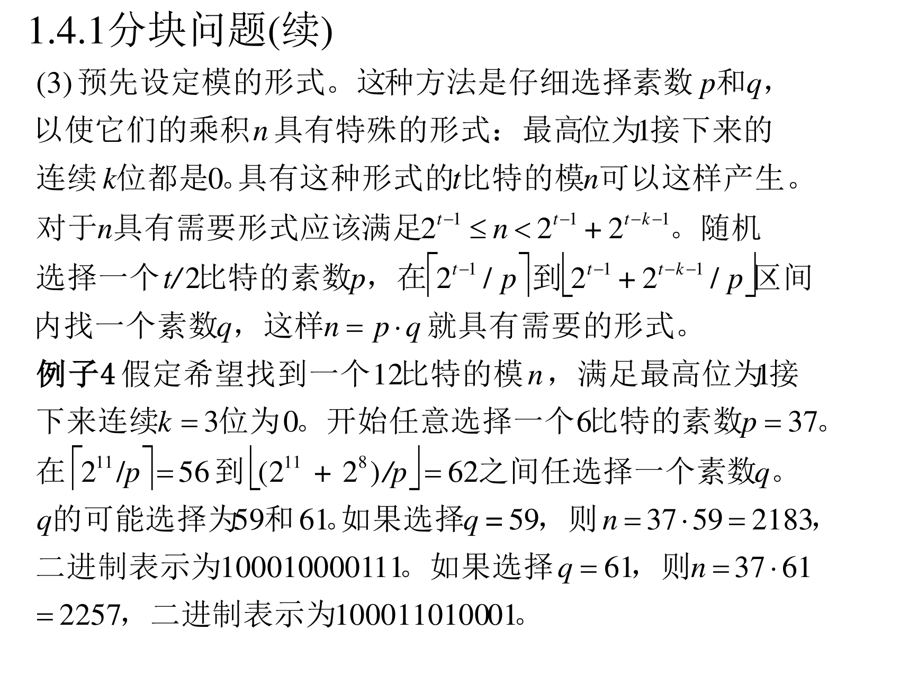
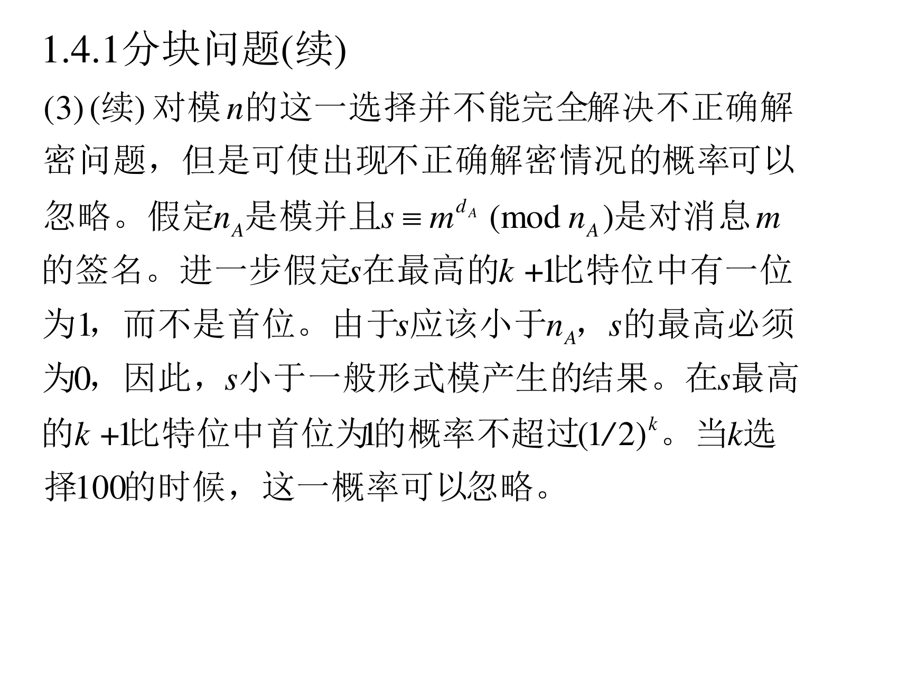

本页目录
7.1.4 RSA 签名的执行
这一小节全是工程问题。PPT 一共列了五个（1.4.1 到 1.4.5），每个都对应真实系统里踩过的坑。
7.1.4.1 分块问题
问题的来源（PPT 第 14 页）
一种对 RSA 的常用方法是签名一条消息再对签名结果加密 。必须考虑在执行这一过程时两个模的长度。假定 A 希望签名再加密一条消息给 B。假定 ( n A , e A ) (n_A,e_A) ( n A , e A ) ( n B , e B ) (n_B,e_B) ( n B , e B ) 如果 n A > n B n_A>n_B n A > n B
翻译成人话 ：A 要给 B 发"签名+加密"的消息（这是通信中常见需求：既要保密又要能认证）。流程是：
A 用自己 的私钥签名：s = m d A m o d n A s=m^{d_A}\bmod n_A s = m d A mod n A s s s n A n_A n A
A 再用 B 的公钥 加密 s s s c = s e B m o d n B c=s^{e_B}\bmod n_B c = s e B mod n B
问题出在第 2 步 ：s s s n B n_B n B 信息丢了 ——B 拿到的不是原来的 s s s m m m
例子 3：一个具体失败的例子（PPT 第 15 页）

例子 3 ：令 n A = 8387 ⋅ 7499 = 62894113 n_A=8387\cdot7499=62894113 n A = 8387 ⋅ 7499 = 62894113 e A = 5 e_A=5 e A = 5 d A = 37726937 d_A=37726937 d A = 37726937 n B = 55465219 n_B=55465219 n B = 55465219 e B = 5 e_B=5 e B = 5 d B = 44360237 d_B=44360237 d B = 44360237 n A > n B n_A>n_B n A > n B m = 1368797 m=1368797 m = 1368797 (1) s ≡ m d A ( m o d n A ) ≡ 136879 7 37726937 ( m o d 62894113 ) ≡ 59847900 s\equiv m^{d_A}\pmod{n_A}\equiv1368797^{37726937}\pmod{62894113}\equiv59847900 s ≡ m d A ( mod n A ) ≡ 136879 7 37726937 ( mod 62894113 ) ≡ 59847900 (2) c ≡ s e B ( m o d n B ) ≡ 5984790 0 5 ( m o d 55465219 ) ≡ 38842235 c\equiv s^{e_B}\pmod{n_B}\equiv59847900^{5}\pmod{55465219}\equiv38842235 c ≡ s e B ( mod n B ) ≡ 5984790 0 5 ( mod 55465219 ) ≡ 38842235 (1) s ^ ≡ c d B ( m o d n B ) ≡ 3884223 5 44360237 ( m o d 55465219 ) ≡ 4382681 \hat{s}\equiv c^{d_B}\pmod{n_B}\equiv38842235^{44360237}\pmod{55465219}\equiv4382681 s ^ ≡ c d B ( mod n B ) ≡ 3884223 5 44360237 ( mod 55465219 ) ≡ 4382681 (2) m ^ ≡ s ^ e A ( m o d n A ) ≡ 438268 1 5 ( m o d 62894113 ) ≡ 54383568 \hat{m}\equiv\hat{s}^{e_A}\pmod{n_A}\equiv4382681^{5}\pmod{62894113}\equiv54383568 m ^ ≡ s ^ e A ( mod n A ) ≡ 438268 1 5 ( mod 62894113 ) ≡ 54383568 注意 m ≠ m ^ m\ne\hat{m} m = m ^ 发生这个问题的原因是 s s s n B n_B n B
核对 ：本讲义把上面五个数全部验算了一遍，与 PPT 完全一致 ✔，并且确认 m = 1368797 ≠ m ^ = 54383568 m=1368797\ne\hat m=54383568 m = 1368797 = m ^ = 54383568
失败原因分析（直接看数字） ：
s = 59847900 s=59847900 s = 59847900 n B = 55465219 n_B=55465219 n B = 55465219 s > n B s>n_B s > n B 所以 c = s e B m o d n B c=s^{e_B}\bmod n_B c = s e B mod n B s s s s − n B = 4382681 s-n_B=4382681 s − n B = 4382681
B 解密拿到的是 4382681 4382681 4382681 s ^ \hat s s ^ 59847900 59847900 59847900
后面用 A 的公钥去恢复，自然得到 438268 1 5 m o d n A = 54383568 ≠ m 4382681^{5}\bmod n_A=54383568\ne m 438268 1 5 mod n A = 54383568 = m
三种解决办法（PPT 第 16–19 页）

(1) 调换顺序。 如果先做小模操作再做大模操作，不正确解密的问题将不会出现。也就是说，如果 n A > n B n_A>n_B n A > n B 先使用 B 的公开密钥加密消息，再用自己的秘密密钥签名加密的消息 。当然，最好的操作顺序通常是先签名消息再加密签名，原因是如果 A 先加密再签名，攻击者可以移除该签名而换上自己的签名 。虽然攻击者并不知道具体签名的内容，这仍然是对攻击者十分有利的情形。因此，调换顺序并不是最好的解决方法 。
翻译成人话 ：先加密再签名，等于"把一封信装进信封、再把信封口封上"——任何人都能换掉信封 （把 A 的签名剥掉换成自己的）。虽然攻击者看不懂信，但他能声称"这封信是我发出去的"。所以 (1) 不可取。

(2) 每个实体两个模。 每个实体把用于签名的模 和加密的模 分开。如果每个实体的签名的模都小于系统中所有用来加密的模，则不正确解密的情况将不再会发生。这种方法可以通过要求加密的模使用 t + 1 t+1 t + 1 t t t
翻译成人话 ：既然出问题是因为"签名用的模比加密用的模大"，那就干脆立法规定：签名模一律比加密模小 （差一个比特就够）。这样"先签名后加密"就永远安全。代价是每个实体要维护两对密钥，而且要保证"签名模 < 所有人加密模"这个全局约束（实践中用固定长度区间来实现）。

(3) 预先设定模的形式。 这种方法是仔细选择素数 p p p q q q n n n 最高位为 1 接下来的连续 k k k 。具有这种形式的 t t t n n n n n n
2 t − 1 < n < 2 t − 1 + 2 t − k − 1 2^{t-1}<n<2^{t-1}+2^{t-k-1} 2 t − 1 < n < 2 t − 1 + 2 t − k − 1 t / 2 t/2 t /2 p p p 2 t − 1 / p 2^{t-1}/p 2 t − 1 / p ( 2 t − 1 + 2 t − k − 1 ) / p (2^{t-1}+2^{t-k-1})/p ( 2 t − 1 + 2 t − k − 1 ) / p q q q n = p ⋅ q n=p\cdot q n = p ⋅ q 例子 4 ：假定希望找到一个 12 比特的模 n n n k = 3 k=3 k = 3 p = 37 p=37 p = 37 2 11 / p = 56 2^{11}/p=56 2 11 / p = 56 ( 2 11 + 2 8 ) / p = 62 (2^{11}+2^{8})/p=62 ( 2 11 + 2 8 ) / p = 62 q q q q q q q = 59 q=59 q = 59 n = 37 ⋅ 59 = 2183 n=37\cdot59=2183 n = 37 ⋅ 59 = 2183 1000 1000 0111 1000\,1000\,0111 1000 1000 0111 q = 61 q=61 q = 61 n = 37 ⋅ 61 = 2257 n=37\cdot61=2257 n = 37 ⋅ 61 = 2257 1000 1101 0001 1000\,1101\,0001 1000 1101 0001

(3)（续） 对模 n n n n A n_A n A s ≡ m d A ( m o d n A ) s\equiv m^{d_A}\pmod{n_A} s ≡ m d A ( mod n A ) m m m s s s k + 1 k+1 k + 1 s s s n A n_A n A s s s s s s s s s k + 1 k+1 k + 1 1 / ( 2 k ) 1/(2^{k}) 1/ ( 2 k ) k k k
翻译成人话 ：
让模 n n n 1 000...0 xxx...x（最高位 1，紧接着 k k k
签名 s < n s<n s < n s s s s s s n n n
只要 s s s n n n s > n B s>n_B s > n B
只有 s s s 最高 k + 1 k+1 k + 1 （也就是 s s s n n n 1 / 2 k 1/2^{k} 1/ 2 k k = 100 k=100 k = 100 1 0 − 30 10^{-30} 1 0 − 30 可以忽略 。
例子 4 手算 ：
目标：12 比特的 n n n k = 3 k=3 k = 3 1000 x x x x x x x x 1000\,xxxxxxxx 1000 xxxxxxxx
取 6 比特素数 p = 37 p=37 p = 37 37 = 10010 1 2 37=100101_2 37 = 10010 1 2
q q q 2 11 / 37 = 2048 / 37 = 55.35 2^{11}/37=2048/37=55.35 2 11 /37 = 2048/37 = 55.35 ( 2 11 + 2 8 ) / 37 = 2304 / 37 = 62.27 (2^{11}+2^{8})/37=2304/37=62.27 ( 2 11 + 2 8 ) /37 = 2304/37 = 62.27 [ 56 , 62 ] [56,62] [ 56 , 62 ] 区间内的素数是 59 和 61；
取 q = 59 q=59 q = 59 n = 2183 = 10001000011 1 2 n=2183=100010000111_2 n = 2183 = 10001000011 1 2 1 000 10000111，最高位 1 后面 3 位是 000 ✔
取 q = 61 q=61 q = 61 n = 2257 = 10001101000 1 2 n=2257=100011010001_2 n = 2257 = 10001101000 1 2 1 000 11010001 ✔
补 关于例 4 的"2 11 / p = 56 2^{11}/p=56 2 11 / p = 56 2 11 / 37 = 55.35 2^{11}/37=55.35 2 11 /37 = 55.35 向上取整 （因为要保证 n = p q ≥ 2 11 n=pq\ge 2^{11} n = pq ≥ 2 11
7.1.4.2 短消息与长消息
（PPT 第 20 页）
由于签名和消息的规模相当，这在消息长的情况下非常不利。为了解决这一问题，通常采用 Hash 函数 。签名方案只作用于消息的 Hash 函数值，而不是消息的本身。在这种情况下，使用冗余函数 R R R
翻译成人话 ：RSA 的签名长度和模长一样（比如 2048 比特 = 256 字节）。如果消息有 10 MB，直接对消息签名根本装不下 （而且慢得可怕）。所以标准做法是：先算 Hash，再对 Hash 值签名 。
顺带一个重要结论：改用 Hash 之后，冗余函数 R R R ——因为 Hash 值本身就已经把消息"压缩 + 打乱"了，随机伪造的难度由 Hash 的抗第二原像性来保证。
（PPT 第 21 页）为什么 Hash 更划算（一道简单的算术题）
假定 n n n 2 ⋅ k 2\cdot k 2 ⋅ k k k k k ⋅ t k\cdot t k ⋅ t k k k m = m 1 ∥ m 2 ∥ ⋯ ∥ m t m=m_1\|m_2\|\cdots\|m_t m = m 1 ∥ m 2 ∥ ⋯ ∥ m t 签名数据是 2 ⋅ k ⋅ t 2\cdot k\cdot t 2 ⋅ k ⋅ t 。另一种办法是 A 对消息 m m m l ≤ k l\le k l ≤ k 签名数据是 k ⋅ t + 2 ⋅ k k\cdot t+2\cdot k k ⋅ t + 2 ⋅ k ，这里 k ⋅ t k\cdot t k ⋅ t t ≥ 2 t\ge2 t ≥ 2 k ⋅ t + 2 ⋅ k ≤ 2 ⋅ k ⋅ t k\cdot t+2\cdot k\le2\cdot k\cdot t k ⋅ t + 2 ⋅ k ≤ 2 ⋅ k ⋅ t k k k
翻译成人话 （把两种方案的"总带宽"算出来对比）：
方案
传输的总数据量
说明
分组逐块签名 消息 k t kt k t k t kt k t 2 k t 2kt 2 k t
每 k k k 2 k 2k 2 k
先 Hash 再签名 消息 k t kt k t 2 k 2k 2 k k t + 2 k kt+2k k t + 2 k
无论消息多长，只多一个签名的长度
t ≥ 2 t\ge2 t ≥ 2 k t + 2 k ≤ 2 k t kt+2k\le2kt k t + 2 k ≤ 2 k t 消息越长，Hash 越划算 。而消息本来就短于 k k k
7.1.4.3 签名产生和认证的执行特征
（PPT 第 22 页）
令 n = p ⋅ q n=p\cdot q n = p ⋅ q 2 ⋅ k 2\cdot k 2 ⋅ k p p p q q q k k k m m m s ≡ m d ( m o d n ) s\equiv m^{d}\pmod n s ≡ m d ( mod n ) O ( k 3 ) O(k^{3}) O ( k 3 ) O ( k 2 ) O(k^{2}) O ( k 2 ) 建议公开指数 e e e 2 16 + 1 2^{16}+1 2 16 + 1
因此，RSA 签名方案非常适合于签名操作可以预先完成，而仅需要认证在线完成 的情况。例如，可信第三方为实体 A 产生公钥证书，这个证书只要一次签名产生，而签名则可以反复为各个实体多次认证。
翻译成人话 ：
签名慢、认证快 ：签名要用大的 d d d O ( k 3 ) O(k^3) O ( k 3 ) e e e O ( k 2 ) O(k^2) O ( k 2 ) k = 1024 k=1024 k = 1024 e e e e = 3 e=3 e = 3 e e e e = 2 16 + 1 = 65537 e=2^{16}+1=65537 e = 2 16 + 1 = 65537 这个"不对称"正好匹配证书场景 ：CA 签一次证书（慢，但只做一次），之后全世界无数客户端反复验证 （快，每次都很轻）。
7.1.4.4 参数选择
（PPT 第 23 页）
当需要的签名有长的生命周期或关系到整个网络安全时，模的长度应该至少为 1024 比特 。慎重的态度是关注分解整数的进展，以便随时调整相应参数的选择。
目前，没有 RSA 签名方案选择小公开指数 e e e 2 16 + 1 2^{16}+1 2 16 + 1 。但不推荐通过限制秘密指数 d d d 。
翻译成人话 ：
模长是安全底线，1024 比特是最低要求 （现在普遍推荐 2048 或 3072）。而且要从"计算能力进步"的角度定期上调。
e e e d d d d d d n 0.25 n^{0.25} n 0.25 d d d d d d
7.1.4.5 关于系统参数
（PPT 第 24 页）
每个实体必须使用不同的 RSA 模进行签名；在整个系统中使用一个模的方法不安全。 但是，在很多应用中，整个系统可以选择相同的公开指数 e e e
翻译成人话 ：n n n p p p 共用 n n n φ \varphi φ ，于是：
你的公钥是 ( n , e 1 ) (n,e_1) ( n , e 1 ) ( n , e 2 ) (n,e_2) ( n , e 2 ) gcd ( e 1 , e 2 ) = 1 \gcd(e_1,e_2)=1 g cd( e 1 , e 2 ) = 1
更糟的是知道 φ \varphi φ n n n 知道一个人的私钥就能算出所有人的 。
而 e e e